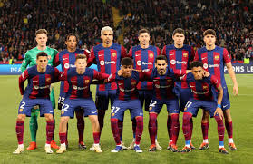
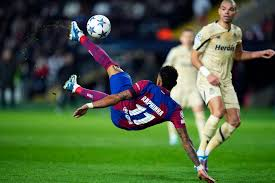
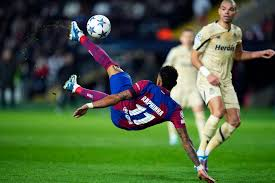

Latest Highlights
FC Barcelona recently showed their dominance in the Champions League, with stunning performances from their top stars.
Raphinha's incredible bicycle kick left fans in awe and secured a critical win against their rivals.
Explore news, history, and fan stories about one of the greatest football clubs in the world.

FC Barcelona recently showed their dominance in the Champions League, with stunning performances from their top stars.
Raphinha's incredible bicycle kick left fans in awe and secured a critical win against their rivals.